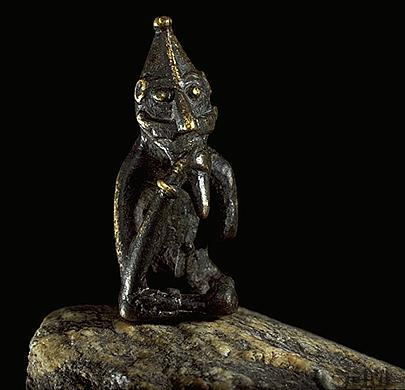
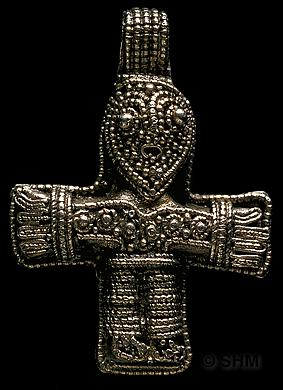

 
INDIANA UNIVERSITY
COLL E104
PAGANS
AND CHRISTIANS
IN THE
EARLY MIDDLE AGES
Fall, 2009
| Dr.
Deborah Deliyannis Office: Ballantine Hall 708 Office hours: Wed. 1:30-3:30 or by appointment Phone: 855-3431 Email: ddeliyan@indiana.edu |
TuTh
11:15-12:05 SW 007 Sect. 7791 |
Associate
Instructor: Angel Flores-Rodriguez, agflores@imail.iu.edu
Discussion sections:
Thursday
2:30-3:20 BH 235
Friday 9:05-9:55
WH 114
Friday 11:15-12:05 ED 2280
Friday 12:20-1:10 ED
1204
Description
Between AD 33
and 1400, the
people of Europe gradually converted from a variety of other religions
to
Christianity. In this course, we
will consider both the (scanty) evidence for pre-Christian religions
and the
narratives of conversion for each region of Europe, focusing on the
post-Roman
period (i.e. after AD 400). The
focus of the course will be a critical examination of the original
written
sources and material remains that tell us about the pre-Christian
religions of
Europe, the conversion of each group, and the impact of Christianity.
Books
There is one main textbook for the semester, which is available for purchase at the IU Bookstore and on reserve in the main library:
Richard Fletcher, The Barbarian Conversion: From Paganism to Christianity (University of California Press, 1999).
Other readings
are assigned
as below, and will be accessible via the online syllabus, found via
Oncourse or
directly at:
/e104f09.html
Note that
several of the
readings are copy-right protected, and you must use a password to see
them. You can find the username and password
on Oncourse, under "Announcements"
Requirements
The
course will require weekly readings and short exercises on primary
sources,
participation in discussion sections, and a midterm and final exam.
Attendance
at lecture
5%
Attendance
and participation in weekly discussion sections
15%
8
exercises (out of 12 assigned) (5% each)
40%
midterm
exam
15%
final
exam
25%
Attendance will
be taken in
lecture; your grade will reflect the numerical percentage of the
classes you
attend. You will be allowed two free
absences (i.e. if you attend all but two classes, you will still have
100%). If you are
sick, please do not come to class - let me know and your absence will
be excused. If you have another kind of excusable absence
that can be documented, your absence will be excused and will NOT count
as one of your two free absences.
In the
discussion classes
students are expected not only to learn but also to teach and
contribute;
discussion will be based on the exercises due in class that day, so you
will
almost always have something to say.
Your grade will be based both on your numerical attendance
percentage
AND on the degree of participation.
You will NOT be allowed any free absences from discussion
section (but again, if you
are sick, your absence will be excused). More
than three unexcused absences from
discussion section will result in a "zero" being recorded as the
discussion class grade.
A written
exercise has been
assigned for 12 of the discussion section meetings (no exercise the
first week,
none the week before the midterm).
Each exercise is based on the assigned primary source readings
for that
week, and is due in class that day.
You must do 8 out of the 12 exercises assigned, and you
will not
be allowed to turn exercises in late.
I suggest that you start writing the exercises at the start of
the
semester (i.e. don't put it off!), so that when unexpected events take
place,
you'll be caught up.
The exercises
are essays,
which should be 1-2 pages, double-spaced, 12-point font, 1 inch margins. "1-2 pages" means more
than one page; half of one page will not count and you will receive a 0. You should make specific reference to
the relevant primary source(s), as well as to lectures or material from
the
textbook to provide a context for the source. Be
sure to answer the assigned question.
Extra credit of
1% on your
semester average will be given for each satisfactory (B or higher)
exercise
turned in above the assigned 8, up to a total of four extra credit
points. Thus, if you turn in 12
satisfactory
exercises, you will receive an extra 4% on your semester average.
The midterm exam
will
consist of identifications and short answer questions.
Half of the final exam will be similar
in format, on the second half of the class (i.e. not comprehensive),
while the
other half will consist of an essay (topic given out in advance)
covering
material from the entire semester.
Sept. 1 Introduction
Sept. 3 Judaism,
Christianity, and paganism in the Roman world
Fletcher,
pp. 1-19
Primary
sources:
[[No
written exercise this week]]
Sept. 8 The
conversion of the Roman empire
Sept. 10 Missions to the
Germans
Fletcher,
pp. 19-77
Primary
sources:
Eusebius,
The Conversion of Constantine
Auxentius,
selections about Ulfilas
Exercise: Here we have the two
primary
biographical models for medieval conversion: the
converted king and the missionary priest. What
are the essential features of
each? Are they related?
How or how not?
Sept. 15 The
Irish
Sept. 17 Irish
Christianity
Fletcher,
pp. 78-96
Primary
sources:
Exercise: This is one of the few
personal
testimonies that we have from the early Middle Ages; Patrick has
written it in
response to unspecified charges that someone is bringing against him. How does he think of his mission?
What does he think of the Irish? Do
we learn anything about Irish
paganism from this text?
Sept. 22 The
Fall of the Roman Empire
Sept. 24 The
conversion of the Franks
Fletcher,
pp. 97-110, 130-159
Primary
sources:
Gregory
of
Tours, the Conversion of Clovis
Exercise:
Compare and contrast the different stages of Clovis' conversion to
Christianity. Which part of the
story would have been most convincing to:
a Frankish warrior? a Roman
living in Gaul? a peasant
woman?
Sept. 29 Britain
after the fall of Rome
Oct. 1 The
conversion of the Anglo-Saxons
Fletcher,
pp. 110-129, 160-192
Primary
sources:
Bede: The Conversion of England
Exercise: What can we learn
about Anglo-Saxon
paganism from Bede's accounts?
Given that Bede was a Christian monk, how reliable do you think
this
information is?
Oct. 6 Missions
to the Germans
Oct. 8 Charlemagne
and the Germans
Fletcher,
pp. 193-227
Primary
sources:
Willibald: the Life of St. Boniface, and the
Letter from Daniel to Boniface
Charlemagne: Capitulary for Saxony, 775-790
Exercise:
How does violence and force come into the story of the conversion of
the
Germans? Does this seem similar or
different from earlier sources that we have read?
Oct. 13 Christian
organization
Oct. 15 Pagan
survivals
Fletcher,
pp. 228-284
Exercise: No paper this week;
review for midterm
Oct. 20 MIDTERM
EXAM
Oct. 22 Challenges
to Christianity
Fletcher,
pp. 285-316
Primary
sources:
Exercise: How do the Muslim laws
in the Pact
of Umar compare to the Charlemagne's Capitulary?
Oct. 27 The
origins of the Slavs
Oct. 29 The
Slavs and the Bulgars
Fletcher,
pp. 327-368
Primary
sources
The
responses of Pope Nicholas I to the questions of the Bulgars, AD 866,
selections
Exercise: These particular
selections
from the responses of Pope Nicholas have been chosen because they
concern how
new Christians are supposed to adapt pagan practices.
From these selections, what is the attitude of Christians
towards pagan practices supposed to be?
Nov. 3 The
Vikings
Nov. 5 The
conversion of Scandinavia
Fletcher,
pp. 369-416
Primary
sources:
Explore
the Jelling
website,
especially the page about Harald
Bluetooth
The
Heathen Temples of Uppsala, by Adam of Bremen
Exercise: Describe what has been
found at
Jelling, and how it relates to Christianity and paganism in Scandinavia.
Nov. 10 Russia
before conversion
Nov. 12 The
conversion of Russia
Fletcher,
pp. 382-86
Primary
sources:
The
Christianisation of Russia (988) from the Russian Primary Chronicle
Exercise: What elements in this
story have we
seen before? What is new?
Nov. 17 Central
Europe: Bohemia and Poland
Nov. 19 Central
Europe: Magyars and Wends
Fletcher,
pp. 417-450
Primary
sources:
Selections
from The Life of St. Stephen of Hungary
Exercise: This is the biography
of the first Christian king of Hungary, written 80 years after his
death, and after he became a saint. How do these factors
influence the presentation of events in the early years of Stephen's
life?
Nov. 24 The
Crusades
Nov. 26 NO
CLASS - Thanksgiving
NO SECTION MEETINGS THIS WEEK
Fletcher,
pp. 316-326
Dec. 1 Popular
religion
Dec. 3 Church
architecture
Fletcher,
pp. 451-482
Primary
sources:
Wulfstan,
the so-called "Canons of Edgar" (selections)
Exercise: How "Christian" are
people
in 11th-century England? Given
that Christianity has been established for over 4 centuries, are you
surprised
by any of the recommendations here?
Dec. 8 The
"last pagans"
Dec. 10 Conclusion
Fletcher,
pp. 483-524
Primary
sources:
The
Chronicle of Henry of Livonia (selections)
Exercise:
How are the Livonians and
Estonians induced to convert? What
is the motivation of the Christians who are working to convert them
(according
to the text)?
Final
Exam: 5:00-7:00 p.m., Thursday, December 17, in the regular
lecture classroom